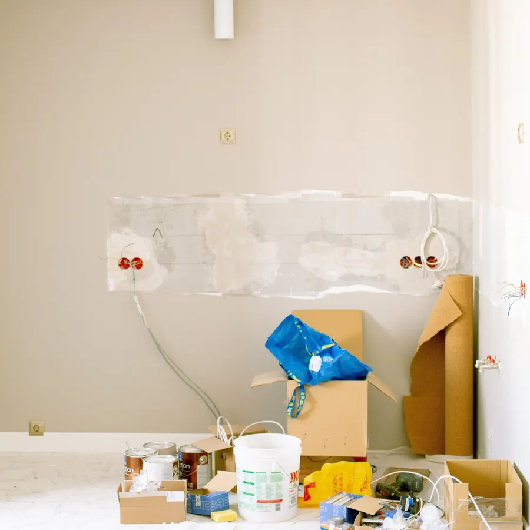

حدد المشكلة قبل تحديد الخدمة
ابدأ بالأجزاء التي تحتاج تغييرًا فعليًا: جدران متضررة، دهانات قديمة، جبس يحتاج تجديدًا، أو تشطيبات لم تعد مناسبة. تحديد الحالة يمنع توسيع المشروع بلا حاجة ويساعد في ترتيب الأولويات.
الترميم ليس دائمًا مشروعًا شاملًا. أحيانًا يكون المطلوب تجديد تشطيبات محددة، وأحيانًا ترتبط عدة أعمال ببعضها مثل تجهيز الجدران والدهانات والجبس والديكور.

دليل عملي للخدمةابدأ بالأجزاء التي تحتاج تغييرًا فعليًا: جدران متضررة، دهانات قديمة، جبس يحتاج تجديدًا، أو تشطيبات لم تعد مناسبة. تحديد الحالة يمنع توسيع المشروع بلا حاجة ويساعد في ترتيب الأولويات.
الترميم الجزئي يناسب المساحات أو العناصر المحددة، بينما التجديد الأوسع يصبح منطقيًا عندما تكون عدة تشطيبات مترابطة. القرار يعتمد على حالة المكان والميزانية والنتيجة المطلوبة، وليس على اسم واحد للخدمة.
عند اجتماع أكثر من خدمة، من المهم ترتيبها قبل البدء. أعمال المعالجة والتجهيز تسبق التشطيب النهائي عادة، ثم تأتي الدهانات واللمسات النهائية بحسب تفاصيل المشروع.
أرسل صورًا واضحة لكل مساحة تحتاج عملًا، مع ذكر نوع العقار وهل المكان مأهول أو فارغ وما الذي ترغب في تغييره. هذا يساعد في تكوين تصور مبدئي، ثم تُحدد الحاجة إلى المعاينة.
أرسل صورًا واضحة للمكان مع وصف مختصر للمطلوب، ويمكن البدء بتقييم مبدئي قبل تحديد ما إذا كانت المعاينة ضرورية.
تواصل عبر واتساببعد تحديد احتياج المساحة، اختر صفحة الخدمة في المدينة التي يوجد بها المشروع لتعرف نطاق العمل والمعلومات اللازمة للتقييم.